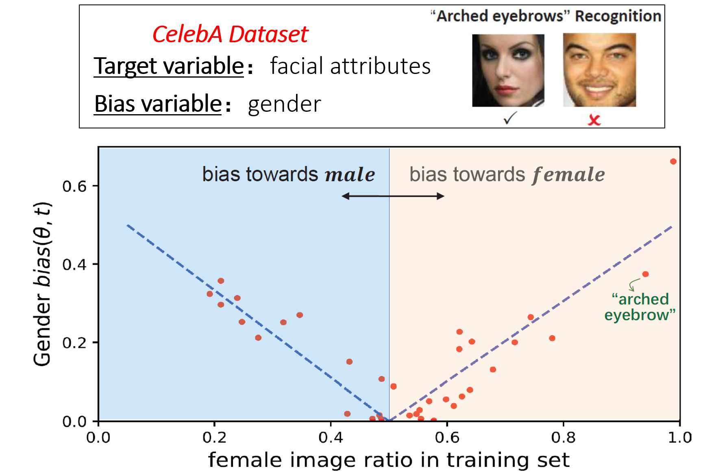
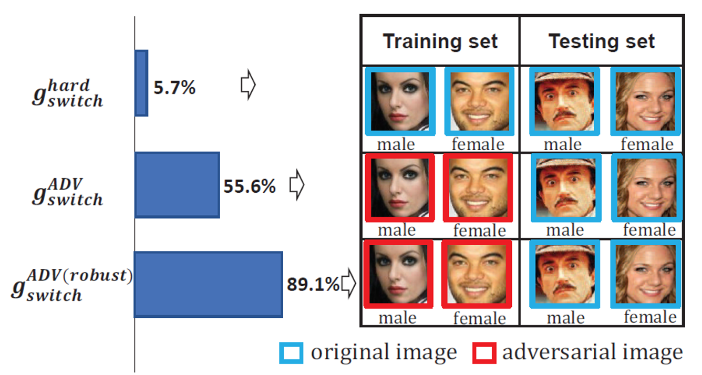
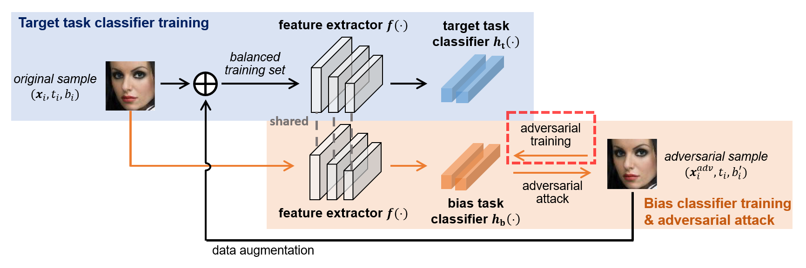
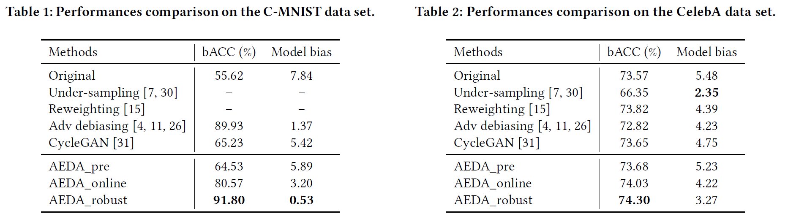

Towards Accuracy-Fairness Paradox:
Adversarial Example-based Data Augmentation for Visual Debiasing
Introduction
Machine learning fairness concerns about the biases towards certain protected or sensitive group of
people when addressing the target tasks. This paper studies the debiasing problem in the context of image classification tasks.
Our data analysis on facial attribute recognition demonstrates (1) the attribution of model bias from imbalanced training data distribution and (2) the potential of adversarial examples in balancing data distribution.
We are thus motivated to employ adversarial example to augment the training data for visual debiasing. Specifically, to ensure the adversarial generalization as well as cross-task transferability,
we propose to couple the operations of target task classifier training, bias task classifier training, and adversarial example generation.
The generated adversarial examples supplement the target task training dataset via balancing the distribution over bias variables in an online fashion.
Results on simulated and real-world debiasing experiments demonstrate the effectiveness of the proposed solution in simultaneously improving model accuracy and fairness.
Preliminary experiment on few-shot learning further shows the potential of adversarial attack-based pseudo sample generation as alternative solution to make up for the training data lackage.
We summarize our main contributions as follows:
-
We propose to employ adversarial examples to balance training data distribution in the way of data augmentation. Simultaneously improved accuracy and fairness are validated from simulated and real-world debiasing evaluation.
-
We provide an online coupled adversarial example generation mechanism, which ensures both the adversarial generalization and cross-task transferability.
-
We explore the potential of adversarial examples as supplementary samples, which provides alternative perspective of employing adversarial attack and opens up possibility to addressing data lackage issue from new ways.
For more details, please refer to paper.
Motivation
Attribution in imbalanced data distribution:
Fig.1 shows the calculated model bias (y-axis) for different facial attributes and their corresponding female training image ratio (x-axis).
It is easy to find the strong correlation between model bias and imbalanced data distribution: for facial attributes with a
larger ratio of female in training set (>0.5 in the x-axis), female images are more easily correctly classified than male images,
and vice versa for male (<0.5 in the x-axis). For example, there are more female training images for facial attribute
``arched eyebrows'', and the corresponding classifier is observed to derive more correct prediction for female images,
while male images with arched eyebrows are likely to be incorrectly predicted. The observation suggests that the
classifier learns the correlation between facial attribute and gender from the imbalanced data, and thus utilizes the
gender bias variable for target variable prediction. It well validates the motivation of the previous debiasing attempts
via pre-processing to balance training data distribution, so that the learned model will not utilize the bias variables
for target task prediction.

Fig.1 Model bias v.s. imbalanced data distribution. x-axis denotes the female ratio of total people with certain facial attribute in the training set, and y-axis denotes the model bias over gender in predictions testing set.
The Potential of Adversarial Example in Balancing
We conducted preliminary experiment to justify the feasibility of adversarial examples in switching gender labels and generalizing to original real samples.
Specifically, we first trained binary gender classifier g_ori with original face images from the CelebA dataset, and then employed
I-FGSM to attack each original image to its adversarial image with opposite gender label.
Denoting the original image set as X_ori and the attacked adversarial image set as X_adv,
we constructed the following two training datasets: (1) Hard switch: original image set X_ori with manually switched gender
labels; (2) ADV switch: adversarial image set X_adv with attacked gender labels.
We utilized the above two datasets to train gender classifiers g_switch^hard and g_switch^ADV respectively. Fig.2 (top 2 rows) shows their classification accuracy
on the original image testing set. It is easy to understand the extremely poor performance of g_switch^hard as the manually switched labels make the image-label
correlation exactly the opposite between the training and testing sets. While by replacing the original images with adversarial attacked images,
gender classification accuracy increases from 5.7% to 55.6%, verifying that adversarial examples contain useful information about the attack class
and have potential to generalize to original real data.
Following this spirit, we expect that a more robust bias classifier can generate stronger adversarial examples generalizing well to attack class.
Therefore, we first conducted adversarial training on g_ori to improve its robustness and acquired the robust classifier g_robust, and then employed I-FGSM
to attack this robust classifier g_robust to derive new training set ADV switch (robust) with attacked gender label. The learned gender classifier
from this new training set is denoted as g_switch^ADV (robust), whose classification accuracy is shown in the bottom of Fig.2. The significant increase from 55.6%
to 89.1% demonstrates the superior generalization potential of adversarial examples from robust models, which motivates us to design more
robust bias classifiers in generating adversarial examples for data augmentation.

Fig.2 Gender classification accuracy for different training settings with switched labels.
Proposed AEDA Framework
The Potential of Adversarial Example in balancing inspires us to employ adversarial examples to supplement and balance the data distribution for model debiasing. Specifically,
given target task (e.g., predicting the facial attribute of ``arched eyebrow'' from image) with imbalanced training set over bias
variables (e.g., much more female than male samples with ``arched eyebrow'' annotation), adversarial attack is conducted to alter the bias variable
and construct a balanced training set. To guarantee the adversarial generalization and cross-task transferability,
we propose an online coupled adversarial attack mechanism to iteratively optimize between target task training,
bias task training and adversarial example generation. This can be actually regarded as an debiasing attempt between pre-processing and in-processing,
which favorably combines their both advantages.
Specifically, our method has two main parts, the first part is to train the target task by using the augmented data, and the second part train a bias classifier based on the feature extractor of target classifier.
Then, the bias classifier will generate adversarial pseudo examples to augment the target training set. And the iterate fashion of two parts makes that the bias classifier can generate cross-task adversarial examples, because of the iterate fashion can keep the bias classifier know what features are depended on by the target task.
Finally, we also use the adversarial training method to learn a more robust bias classifier, and hope the adversarial examples have stronger generalization and better to balance the training data.
Therefore, the data distribution of the target task training is balanced, and the target classifier will not learn the spurious correlation of original data.

Fig.3 Framework of AEDA_online and AEDA_robust. AEDA_robust contains additional adversarial training module (highlighted with red dashline) to AEDA_online.
Debiasing Evaluation
We evaluated the proposed AEDA solution on both simulated and real-world bias scenarios:
(1) For the simulated bias, we used C-MNIST dataset. Its 10 handwritten digit classes (0-9) were regarded as the target task variables, and the associated background colors were regarded as the bias variable.
When classifying digit classes, the model may rely on the background color of image.
The goal is to remove the background color bias in digit recognition. (2) For the real-world bias, we used the face dataset CelebA with multiple facial attributes as the target task variables.
The goal is to remove the model’s gender bias in facial attribute classification.

Dataset and Code
|